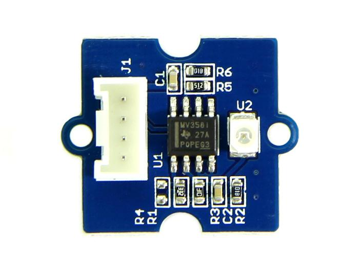
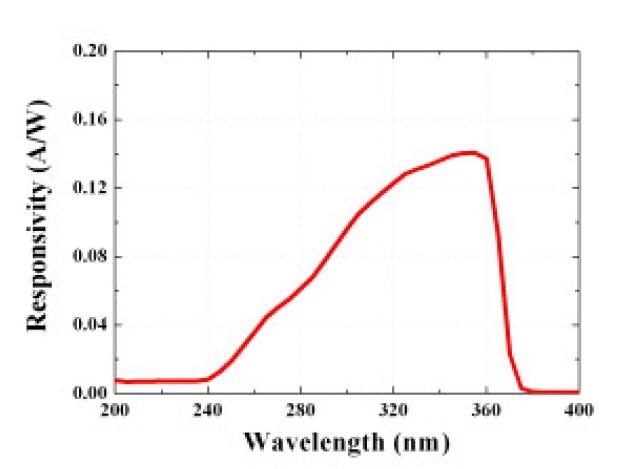

The Grove – UV Sensor is used for detecting the intensity of incident ultraviolet(UV) radiation. This form of electromagnetic radiation has shorter wavelengths than visible radiation. The Grove - UV Sensor is based on the sensor GUVA-S12D which has a wide spectral range of 200nm-400nm. The module outputs electrical signal which varies with the UV intensity, which gives your suggestion if it is a good idea to beach today.
Model:SEN00700P

| Item | Min | Typical | Max | Unit |
|---|---|---|---|---|
| Operating Voltage | 3.0 | 5.0 | 5.1 | VDC |
| Current | 0.31 | mA | ||
| Output Voltage | mV | |||
| Response wavelength | 240 | ~ | 370 | nm |
| Working Temperature | -30 | ~ | 85 | ℃ |
UV sensors are used in many different applications. Examples include pharmaceuticals, automobiles, and robotics. UV sensors are also used in the printing industry for solvent handling and dyeing processes. In addition, UV sensors are also used in the chemical industry for the production, storage, and transportation of chemicals.
The fact of the UV sensor work is: In sunlight, the UV index and Photocurrent are a linear relationship.

About our Grove - UV Sensor, we have converted Photocurrent to corresponding voltage value collected by Arduino/Seeeduino. The output voltage and the UV index is linear:
illumination intensity = 307 * Vsig
where:
Vsig is the value of voltage measured from the SIG pin of the Grove interface, unit V.
illumination intensity unit: mW/m2 for the combination strength of UV light with wavelength range: 240nm~370nm
Note: To calculate the UV index value, please refer to http://www2.epa.gov/sunwise/uv-index. It's hard to say that the measurement from this sensor can be converted to the EPA standard UV index, but can be estimated roughly.
UV Index = illumination intensity / 200
// modified by Victor // to calculate UV index directly void setup(){ Serial.begin(9600); } void loop() { int sensorValue; long sum=0; for(int i=0;i<1024;i++)// accumulate readings for 1024 times { sensorValue=analogRead(A0); sum=sensorValue+sum; delay(2); } long meanVal = sum/1024; // get mean value Serial.print("The current UV index is:"); Serial.print((meanVal*1000/4.3-83)/21);// get a detailed calculating expression for UV index in schematic files. Serial.print("\n"); delay(20); }
Grove - UV Sensor v1.1 schematics(current version)
Grove - UV Sensor v1.1 Sensor Datasheets(current version)
US EPA Suggestions About UV Radiation
Grove - UV Sensor v1.0 schematics and datasheets(older version)